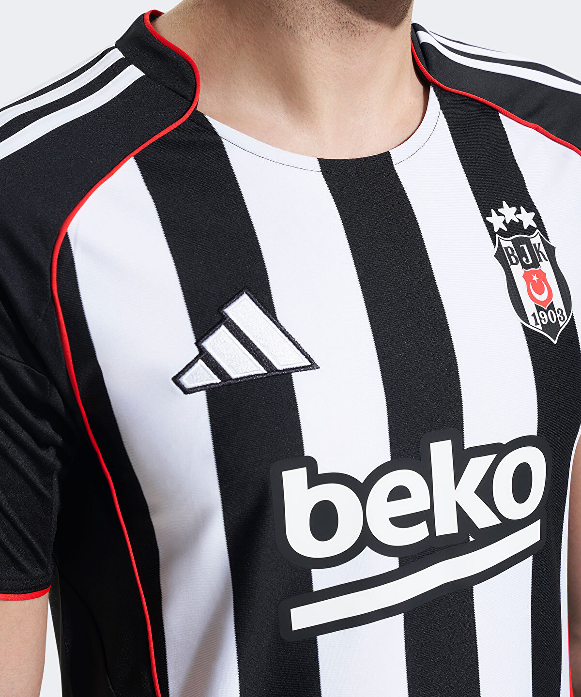

Beşiktaş 25-26 Forma İncelemesi
| Üretici: | Adidas |
| Sezon: | 2025-26 |
| Marka: | Beşiktaş Forma |
| Kumaş: | AEROREADY kumaş teknolojisi |
| Renk: | ⚫⚪ |
Tasarım ve Detaylar
Beşiktaş’ın 2025-2026 sezonu iç saha forması, kulübün köklü tarihine gönderme yapan siyah-beyaz çubuklu tasarımla geri dönüyor. Çubuklar bu kez daha modern bir çizgide yerleştirilmiş ve kırmızı detaylarla bütünlük sağlanmış. Adidas’ın ikonik üç çizgisi omuzlarda belirgin bir şekilde yer alıyor. Formanın yaka ve kol detayları sade tutulmuş, sadelik şıklıkla birleştirilmiş. Taraftarlara nostalji yaşatırken modern bir görünüm sunuyor.
Kumaş ve Malzeme
Adidas, bu sezon da performansı ön planda tutmuş. Forma AEROREADY kumaş teknolojisiyle tasarlanmış; bu teknoloji sayesinde forma teri hızla emer ve dış yüzeye aktarır, böylece oyuncular kuru ve serin kalır. Kumaş yapısı hafif ve esnek, bu da hareket kabiliyetini artırıyor. Hem spor yaparken hem günlük kullanımda rahatlık sunuyor. Ürün %100 geri dönüştürülmüş polyesterden üretilmiş, bu yönüyle çevre dostu bir tercih de sunuyor.
Genel Değerlendirme
2025-26 sezonu formaları, Beşiktaş kültürünü taşıyan estetik detaylarla bezenmiş. Geleneksel renkler korunurken modern bir dokunuş kazandırılmış. Kumaş kalitesi, dikiş detayları ve genel görünüm itibarıyla hem oyunculara hem taraftarlara hitap eden yüksek kaliteli bir ürün. Formanın hem estetik hem işlevsel açıdan tatmin edici olduğunu söylemek mümkün. Özellikle iç saha forması, klasik BJK duruşunu yansıtan bir yapıdadır. Formanın yaka kısmı taraftarlar tarafından beğenilmedi.
🦅 Beşiktaş 2025-2026 Sezonu Formaları – Güncel Fiyat Listesi
Beşiktaş 2025-2026 Sezonu Forması
Fiyat:4.249,00 ₺
Satıcı: Kartal Yuvası
Açıklama: Standart bağcıklı tasarımı ve yüksek performans özellikleriyle sahada üstün kontrol sağlar.
Not: Fiyatlar, satıcıya ve stok durumuna göre değişiklik gösterebilir.